8 Podman Compose¶
8.1 Doelstellingen¶
Na dit hoofdstuk beheerst de student het volgende:
-
uitleggen waarvoor Podman Compose dient en waarom je meerdere containers samen beschrijft in één bestand;
-
het verschil uitleggen tussen Podman Compose en Docker Compose;
-
uitleggen wat YAML is en welke extensies een compose-bestand draagt;
-
podman-compose installeren met pip3 en de versie ervan controleren;
-
de onderdelen van een compose-bestand herkennen en gebruiken: services, volumes, networks, depends_on, environment en command;
-
het verschil uitleggen tussen een folded block en een literal block in YAML;
-
een compose-bestand schrijven waarin twee containers een map delen;
-
een compose-omgeving starten met podman-compose up, en met de optie -d op de achtergrond;
-
de logs van de containers uit je compose-omgeving bekijken;
-
een compose-omgeving stoppen en opruimen, en het verschil uitleggen tussen podman-compose down en podman-compose stop;
-
hulp opvragen over de deelcommando's van podman-compose;
-
een WordPress-omgeving met database opzetten met één compose-bestand en die afwerken via de webinterface.
8.2 Inleiding¶
In dit hoofdstuk maak je kennis met Podman Compose. Daarmee start en beheer je meerdere containers tegelijk vanuit één configuratiebestand.
Een container is een klein, afgeschermd pakketje software, bijvoorbeeld een database of een webserver. Vaak heb je er niet één nodig, maar meerdere die samenwerken. Denk aan het vorige hoofdstuk:
-
Een database (MariaDB) waarin je gegevens opslaat.
-
Een webapplicatie (WordPress) die de gegevens gebruikt.
Zonder Podman Compose start je al die containers één voor één met lange commando's, zoals je in het vorige hoofdstuk gezien hebt. Met Compose beschrijf je alles in één YAML-bestand. Daarin staat:
-
Welke containers je nodig hebt.
-
Welke instellingen en wachtwoorden ze gebruiken.
-
Welke mappen of volumes gegevens moeten opslaan.
-
Hoe de containers met elkaar communiceren via netwerken.
YAML staat voor YAML Ain't Markup Language: het is dus uitdrukkelijk geen opmaaktaal. Het formaat wordt vooral gebruikt om configuratiegegevens eenvoudig en leesbaar te bewaren. YAML-bestanden hebben de extensie .yml of .yaml.
Daarna start je de hele set met één commando: podman-compose up. Dat scheelt een systeembeheerder veel werk, en je kan er later altijd op terugvallen.
Podman Compose gebruikt dezelfde Compose-specificatie (het YAML-formaat) als Docker Compose. Het verschil zit enkel in wat er achter de schermen draait:
-
Docker Compose start containers via de Docker-daemon.
-
Podman Compose start containers via Podman (daemonless, eventueel rootless).
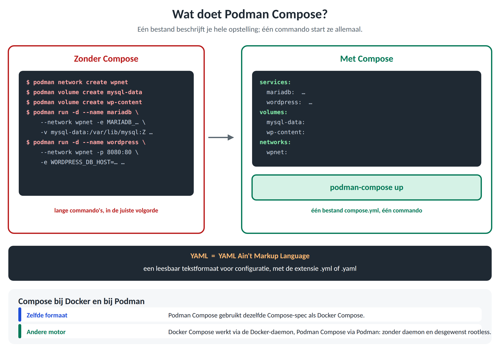
8.3 Installatie Podman Compose¶
We installeren podman-compose op serverXX.
Podman Compose is geschreven in Python. Net zoals veel andere pakketten kan je het op verschillende manieren installeren.
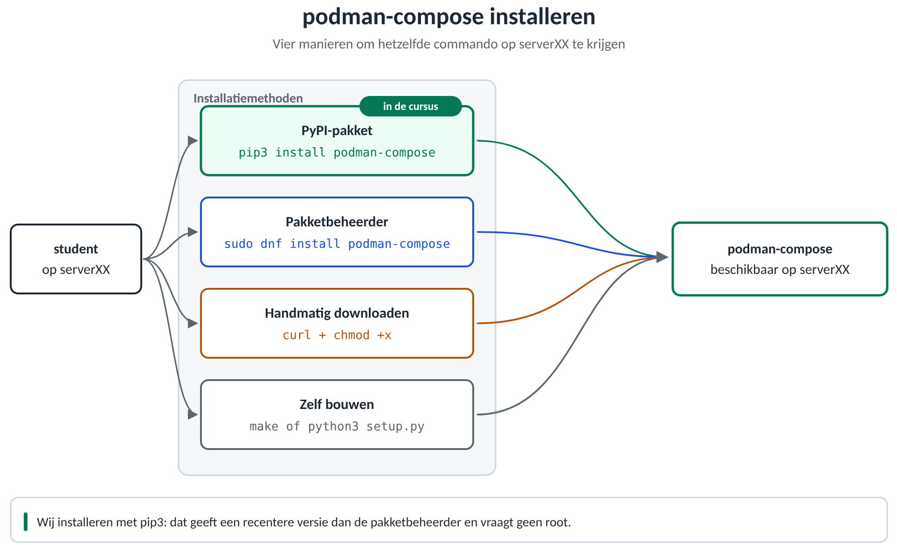
Wij gebruiken pip3, de pakketbeheerder van Python 3. Dat is meteen ook de aangewezen manier om podman-compose te installeren.
Installeer hiervoor eerst pip3.
student@serverXX:~$ sudo dnf install -y python3-pip
Daarna installeer je via pip3 podman-compose.
student@serverXX:~$ pip3 install podman-compose
Defaulting to user installation because normal site-packages is not writeable
Collecting podman-compose
…
Na de installatie is het commando beschikbaar.
student@serverXX:~$ podman-compose
usage: podman-compose [-h] [-v] [--in-pod in_pod] [--pod-args pod_args] [--env-file env_file] [-f file]
…
We controleren de versie van podman-compose.
student@serverXX:~$ podman-compose --version
podman-compose version 1.6.0
podman version 5.8.2
8.4 Componenten van een .yml-bestand¶
8.4.1 Services¶
In Podman Compose beschrijf je elke container als een service. Hieronder staat één service met de sleutels die je het vaakst nodig hebt. De container toont een bericht en blijft daarna een uur draaien.
services:
rhel_work:
image: registry.access.redhat.com/ubi10/ubi
container_name: rhel_worker
command: ["/bin/bash", "-lc", "echo 'Hello from RHEL 10'; sleep 3600"]
volumes:
- shared_volume:/config:Z
networks:
- rhel_network
We overlopen de verschillende onderdelen:
-
services: hoofdsectie waarin je containers definieert.
-
Service name
Het is een label waarmee Podman Compose deze container herkent en beheert als onderdeel van je hele stack.
Hier: rhel_work- Image
-
Het image dat gebruikt wordt (hier een RHEL/UBI 10 image).
Hier: registry.access.redhat.com/ubi10/ubi
- container_name
Hiermee geef je de container een specifieke naam, wat handig kan zijn voor beheer. Hier: rhel_worker.
- Command
Hier geef je een specifiek commando op dat wordt uitgevoerd wanneer de container wordt gestart. Hier wordt bash gestart dat “Hello from RHEL 10” op het scherm zet en erna 3600 seconden slaapt.
Hier: ["/bin/bash", "-lc", "echo 'Hello from RHEL 10'; sleep 3600"]
- Volumes
koppelt een named volume aan /config. Met :Z krijgt het mountpoint correcte SELinux-labels op RHEL.
Hier: shared_volume:/config:Z
- Networks
Hiermee koppel je de service aan een netwerk.
Hier: rhel_network
Let op met inspringen:
-
Je moet spaties gebruiken, geen tabs. Tabs zijn verboden omdat ze op verschillende systemen anders geïnterpreteerd worden.
-
Je mag zelf kiezen hoeveel spaties je gebruikt per niveau — 2, 4 of zelfs 6 — zolang je binnen hetzelfde bestand consequent blijft.
-
De aanbevolen standaard is 2 spaties per niveau, omdat het overzichtelijk en compact is.
8.4.2 Volumes¶
Met volumes beschrijf je opslag die blijft bestaan, ook als een container herstart wordt.
volumes:
shared_volume:
Dit maakt een volume shared_volume aan, dat je daarna in je services kan gebruiken.
Zo koppel je dat volume aan een service:
services:
rhel_worker:
…
volumes:
- shared_volume:/config:Z
In dit voorbeeld wordt shared_volume gekoppeld aan de map /config in de container rhel_worker. Alles wat naar /config geschreven wordt, blijft dus bewaard, ook als de container opnieuw start.
8.4.3 Netwerken¶
Netwerken zorgen ervoor dat containers elkaar kunnen bereiken. Je kan het standaardnetwerk gebruiken of zelf een netwerk aanmaken, wat je meer controle geeft.
networks:
- rhel_network
Dit maakt het netwerk rhel_network aan. Containers in hetzelfde netwerk bereiken elkaar op hun servicenaam.
Zo gebruik je dat netwerk in een service:
services:
rhel_worker:
…
networks:
- rhel_network
In dit voorbeeld hangt de container rhel_worker in het netwerk rhel_network. Daardoor kan hij communiceren met alle andere containers in dat netwerk.
Compose maakt dat netwerk zelf aan, en dat is altijd een bridge-netwerk. Draai je rootful, dan staat de brug op de host; draai je rootless, dan zit ze in de netwerknamespace van je containers.
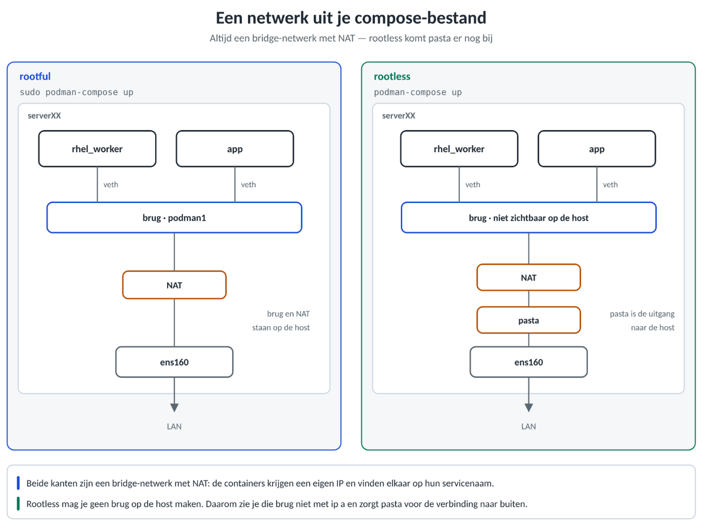
8.4.4 Depends_on¶
Met depends_on leg je de startvolgorde vast: de ene container start pas nadat de andere gestart is.
services:
app:
depends_on:
- config_writer
Dat betekent: container config_writer moet gestart zijn voordat container app wordt gestart.
Let op: depends_on garandeert niet dat de andere container ook klaar is om gebruikt te worden, bijvoorbeeld een database die al op haar poort luistert. Het regelt enkel de volgorde waarin de containers starten.
8.4.5 Environment-variabelen¶
Met environment-variabelen stel je een container in bij het starten.
services:
db:
image: mariadb:latest
container_name: mariadb
environment:
MARIADB_ROOT_PASSWORD: rootpass
MARIADB_DATABASE: mydb
MARIADB_USER: appuser
MARIADB_PASSWORD: secret
…
De environment-sectie zorgt ervoor dat MariaDB zichzelf instelt bij de eerste start. Dat kwam in het vorige hoofdstuk al aan bod.
8.4.6 Command¶
Met command geef je op wat er in de container moet draaien zodra ze start. Je overschrijft daarmee het commando dat in het image zelf staat.
Belangrijk om te weten: Compose start geen shell. Hij neemt wat jij opgeeft, knipt het op de spaties in losse woorden, en voert dat zo uit. Tekens die enkel een shell begrijpt, zoals een puntkomma of een pipe, betekenen voor Compose dus niets.
We bekijken eerst de korte vorm.
services:
app:
command: "echo Hallo wereld"
Compose maakt hiervan de drie woorden echo, Hallo en wereld. Je ziet Hallo wereld op het scherm. Daarna is het commando afgelopen en stopt de container.
Daarnaast is er de lijstvorm. Die gebruik je zodra je meer dan één commando nodig hebt.
command: ["/bin/bash", "-c", "echo Hallo wereld; sleep 3600"]
Hier bepaal je zelf waar elk argument begint en eindigt. Je start uitdrukkelijk een bash-shell met de optie -c, en alles wat tussen de aanhalingstekens staat, is één opdracht voor die shell. Bash leest die opdracht zelf en ziet de puntkomma wel staan: eerst verschijnt Hallo wereld, daarna blijft de container een uur draaien door de sleep.
Laat je de aanhalingstekens weg, dan loopt het mis.
command: "/bin/bash -c echo Hallo wereld; sleep 3600"
Compose splitst die regel namelijk op de spaties:
["/bin/bash", "-c", "echo", "Hallo", "wereld;", "sleep", "3600"]
Nu komt de kern van het probleem. De syntaxis van bash is:
bash -c <opdracht> [arg0] [arg1] [arg2] …
Bash neemt enkel het eerste woord na -c als de uit te voeren opdracht. Alles wat daarna komt, zijn geen commando’s meer, maar parameters die je in het script kan opvragen met $0, $1, $2 enzovoort. In ons voorbeeld betekent dat:
-
echo is de volledige opdracht;
-
Hallo wordt $0;
-
wereld; wordt $1;
-
sleep wordt $2;
-
3600 wordt $3.
Bash voert dus enkel echo uit, zonder tekst erachter. En een echo zonder argumenten zet gewoon een lege regel op het scherm. De parameters worden nooit gebruikt, de sleep wordt nooit uitgevoerd, bash is klaar en de container stopt meteen. Je krijgt geen foutmelding, alleen een verkeerd resultaat, en dat is net lastiger om te vinden.
Je kan dit zelf uittesten op serverXX.
student@serverXX:~$ bash -c echo
student@serverXX:~$ bash -c echo Hallo wereld
student@serverXX:~$ bash -c 'echo $0 en $1' Hallo wereld
Hallo en wereld
De eerste twee regels geven allebei een lege regel: in beide gevallen is de opdracht enkel echo. De derde regel toont waar Hallo en wereld beland zijn, namelijk in $0 en $1.
Onthoud dus:
-
één enkel commando van enkele woorden? De korte vorm volstaat;
-
meerdere commando’s na elkaar, een puntkomma, een pipe of een variabele? Gebruik de lijstvorm en start zelf een shell met /bin/bash -c.
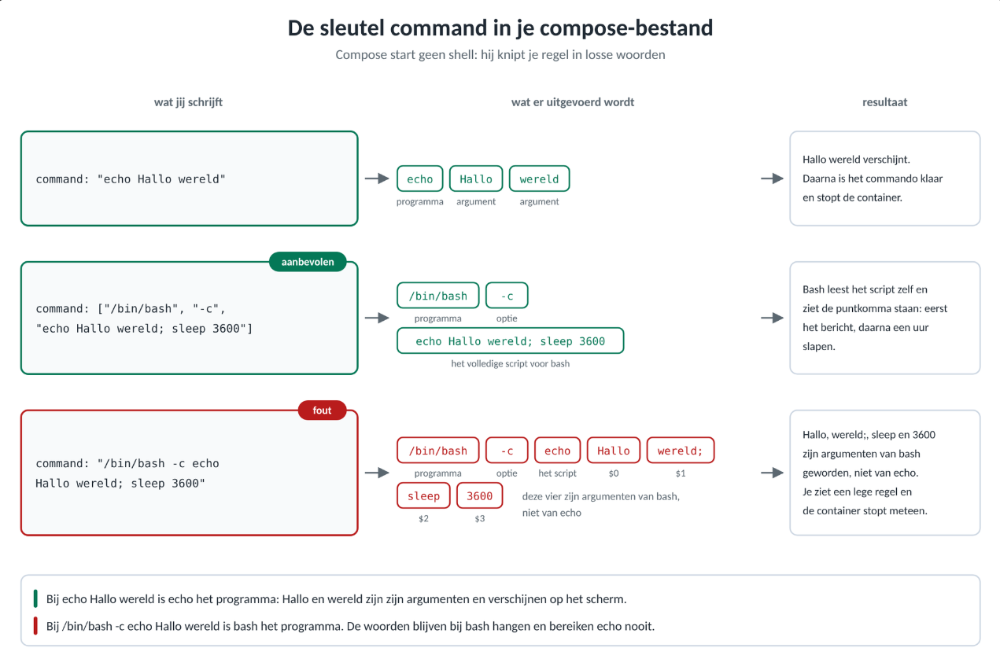
8.4.7 Folded block en literal block¶
Soms is een waarde te lang om op één regel te zetten, of bestaat ze net uit meerdere regels. YAML heeft daar twee tekens voor. Je zet het teken achter de dubbele punt, en de regels eronder springen in.
- Het folded block met >
Alles wat je op de volgende regels typt, wordt aan elkaar geplakt tot één lange tekst. Elke regelovergang wordt vervangen door een spatie.
Voorbeeld folded block:
beschrijving: >
Dit is regel één.
Dit is regel twee.
Dit is regel drie.
YAML leest dit als:
Dit is regel één. Dit is regel twee. Dit is regel drie.
Je gebruikt dit wanneer de waarde eigenlijk één regel is, maar je ze opsplitst om je bestand leesbaar te houden. Dat is precies wat er verderop in dit hoofdstuk bij command: gebeurt: het bash-commando is één lange opdracht, maar je typt ze over meerdere regels.
Let wel op: omdat de regels met een spatie aan elkaar geplakt worden, moet je zelf een puntkomma zetten waar een commando eindigt. Zonder die puntkomma wordt het één onleesbaar geheel.
- Het literal block met |
Hier blijven de regelovergangen staan, precies zoals je ze typt.
Voorbeeld literal block:
beschrijving: |
Dit is regel één.
Dit is regel twee.
Dit is regel drie.
YAML leest dit als:
Dit is regel één.
Dit is regel twee.
Dit is regel drie.
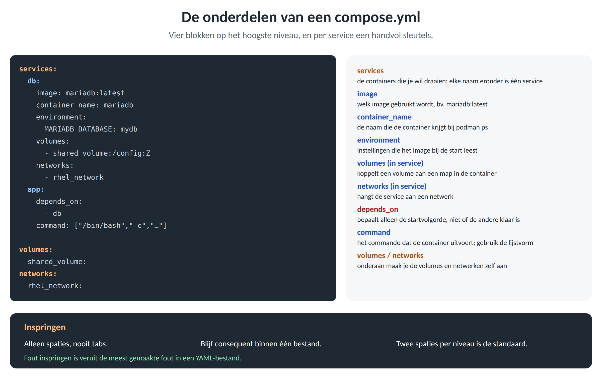
8.5 Voorbeeld 1: gedeelde map¶
8.5.1 .yml-bestand¶
Tijd voor een volledig voorbeeld.
Hieronder zie je een compose.yml met twee containers: config_writer schrijft een configuratiebestand en app leest dat bestand weer uit.
services:
config_writer:
image: registry.access.redhat.com/ubi10/ubi
container_name: config_writer
volumes:
- shared_volume:/config:z
command: >
/bin/bash -c "sleep 5;
echo 'config=true' > /config/appsettings.txt;
echo 'Configuratiebestand geschreven naar /config/appsettings.txt';
sleep 20"
app:
image: registry.access.redhat.com/ubi10/ubi
container_name: app
depends_on:
- config_writer
volumes:
- shared_volume:/app_config:z
command: >
/bin/bash -c "sleep 10;
if [ -f /app_config/appsettings.txt ]; then
cat /app_config/appsettings.txt;
else
echo 'Configuratiebestand niet gevonden.';
fi"
volumes:
shared_volume:
Maak het bestand compose.yml aan in ~/voorbeeld1.
student@serverXX:~$ mkdir voorbeeld1
student@serverXX:~$ nano voorbeeld1/compose.yml
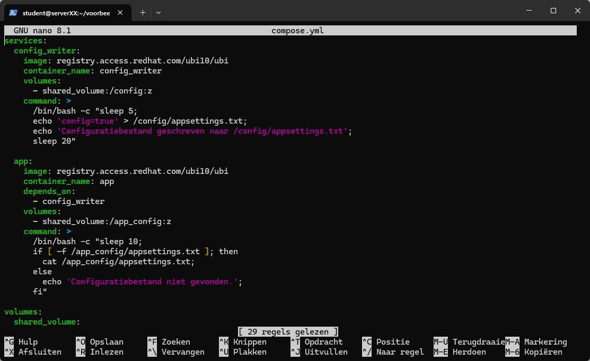
Je kan daarvoor evengoed Visual Studio Code gebruiken.
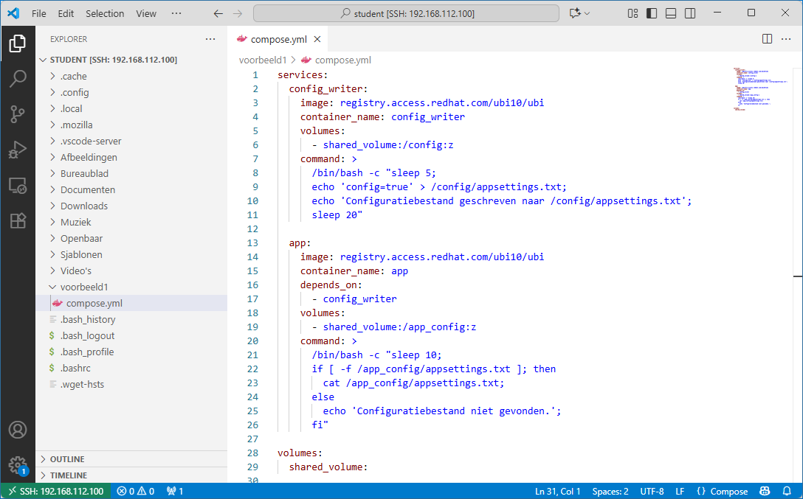
Dit compose.yml-bestand beschrijft twee containers op basis van ubi10/ubi:
-
config_writer: Deze container maakt een configuratiebestand aan in een gedeeld volume (shared_volume) na 5 seconden wachten. Het bestand wordt opgeslagen in de gedeelde opslag en de container blijft vervolgens actief voor 20 seconden.
-
app: Deze container start na de config_writer dankzij de depends_on-parameter. Het controleert of het configuratiebestand aanwezig is in het gedeelde volume en leest de inhoud, of geeft een melding als het bestand niet gevonden is.
Het volume shared_volume zorgt ervoor dat beide containers bij hetzelfde configuratiebestand kunnen.
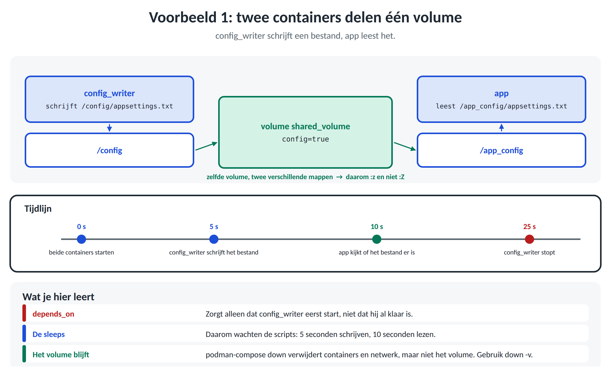
8.5.2 Podman-compose up¶
Zorg dat je terminalvenster openstaat in de map waar je compose.yml staat.
student@serverXX:~$ cd voorbeeld1/
Voer het volgende commando uit:
student@serverXX:~/voorbeeld1$ podman-compose up
c9f5c430823dcf4e1f090bd53282efbfe17f983c29cfcc3bd0ddb53b895ecc0b
9ae589470b1a4334261ccc37796aa1eb996215cb82edef29255962578c348e72
9a29ac43fad3c6ab1b8f6f28e65c87be3ccb3455afb2dca317cdf9bb7a49f678
[config_writer] | Configuratiebestand geschreven naar /config/appsettings.txt
[app] | config=true
Het eerste wat podman-compose up doet, is het bestand compose.yml inlezen.
Daarin staan de services, netwerken, volumes en andere instellingen die nodig zijn om de toepassing te draaien, zoals we hiervoor gezien hebben.
Op basis van die services start Podman Compose alle containers. Daarbij hoort:
-
Het maken van nieuwe containers op basis van de opgegeven images.
-
Het configureren van netwerken, volumes en omgevingsvariabelen zoals gedefinieerd in het bestand.
-
Het uitvoeren van elk gedefinieerd command of entrypoint.
Voer je podman-compose up een tweede keer uit, dan krijg je onderstaande uitvoer.
student@serverXX:~/voorbeeld1$ podman-compose up
[config_writer] | Configuratiebestand geschreven naar /config/appsettings.txt
[app] | config=true
student@serverXX:~/voorbeeld1$
We overlopen nu stap voor stap wat er gebeurt.
- Lezen en verwerken van compose.yml
Podman Compose vindt hier twee services:
-
config_writer: Een service die een configuratiebestand aanmaakt.
-
app: Een service die afhankelijk is van config_writer en het configuratiebestand controleert.
Podman Compose maakt het volume shared_volume aan. Beide containers gebruiken dat volume, elk op een eigen pad. Daarom staat er een kleine z en geen hoofdletter Z: met een hoofdletter Z zou maar één container toegang krijgen.
-
In config_writer wordt het gekoppeld aan /config.
-
In app wordt het gekoppeld aan /app_config.
-
Starten van de config_writer service
Podman Compose start de container config_writer met deze instellingen:
-
De container gebruikt het image registry.access.redhat.com/ubi10/ubi.
-
Het volume shared_volume wordt gemount naar de map /config in de container.
-
Het opgegeven command wordt uitgevoerd, namelijk een Bash-script.
-
/bin/bash -c "sleep 5;
De container wacht 5 seconden voordat hij verder gaat. -
echo 'config=true' > /config/appsettings.txt;
Daarna schrijft hij de string 'config=true' naar een bestand genaamd appsettings.txt in de map /config, die wordt gedeeld via het volume. -
echo 'Configuratiebestand geschreven naar /config/appsettings.txt': Deze regel wordt naar de container-uitvoer geschreven om aan te geven dat het configuratiebestand succesvol is geschreven.
-
sleep 20: Ten slotte wacht de container nog eens 20 seconden voordat hij volledig stopt.
-
-
Starten van de app service (na depends_on)
Door depends_on start de container app pas nadat de container config_writer gestart is.
Let op: depends_on wacht enkel tot config_writer gestart is, niet tot het script erin klaar is. De container app kan dus beginnen voor het bestand geschreven is. In dit voorbeeld wordt dat opgevangen met de sleep-opdrachten in beide containers.
Daarna start de container app met deze instellingen:
-
De container gebruikt ook het image registry.access.redhat.com/ubi10/ubi.
-
Het volume shared_volume wordt gemount naar de map /app_config in de container.
-
Het opgegeven script wordt uitgevoerd.
-
/bin/bash -c "sleep 10;
De container wacht 10 seconden voordat hij verder gaat. Dit zorgt ervoor dat er enige tijd is verstreken, zodat config_writer mogelijk het configuratiebestand heeft kunnen schrijven. -
if [ -f /app_config/appsettings.txt ]
Controleert of het configuratiebestand appsettings.txt bestaat in de map /app_config (dat gekoppeld is aan hetzelfde volume als config_writer, maar in een andere map).- then
-
cat /app_config/appsettings.txt;
Als het bestand bestaat, worden de inhoud van het bestand (config=true) naar de container-uitvoer geschreven.
- else
echo 'Configuratiebestand niet gevonden.'
Als het bestand niet wordt gevonden, wordt er een foutmelding naar de container-uitvoer geschreven.
-
Duur van het uitvoeren van de containers
-
config_writer
Deze container blijft draaien gedurende de “sleep 20” fase, maar zal daarna stoppen. -
App
Deze container zal direct na het uitvoeren van het script stoppen.
8.5.3 Logs bekijken¶
Na podman-compose up kan je in de logs bekijken wat beide containers getoond hebben.
student@serverXX:~/voorbeeld1$ podman logs config_writer
Configuratiebestand geschreven naar /config/appsettings.txt
Configuratiebestand geschreven naar /config/appsettings.txt
- Je ziet het bericht twee keer, omdat je podman-compose up twee keer uitgevoerd hebt.
student@serverXX:~/voorbeeld1$ podman logs app
config=true
config=true
-
Bestaat het bestand appsettings.txt, dan verschijnt de inhoud ervan: config=true.
-
Ook dat zie je twee keer, om dezelfde reden.
Naast de logs per container kan je ook de logs van je hele compose-omgeving opvragen.
student@serverXX:~/voorbeeld1$ podman-compose logs
[app] | config=true
[app] | config=true
[config_writer] | Configuratiebestand geschreven naar /config/appsettings.txt
[config_writer] | Configuratiebestand geschreven naar /config/appsettings.txt
8.5.4 Podman-compose down¶
Met podman-compose down ruim je de hele compose-opstelling op. Het commando stopt de containers als dat nodig is en verwijdert daarna de containers en de netwerken die podman-compose up aangemaakt heeft.
student@serverXX:~/voorbeeld1$ podman-compose down
app
config_writer
app
config_writer
c9f5c430823dcf4e1f090bd53282efbfe17f983c29cfcc3bd0ddb53b895ecc0b
voorbeeld1_default
De containers en het netwerk zijn nu verwijderd.
student@serverXX:~/voorbeeld1$ podman ps -a
…
student@serverXX:~/voorbeeld1$ podman network ls
NETWORK ID NAME DRIVER
2f259bab93aa podman bridge
Volumes worden niet verwijderd. In dit geval staat het volume in /home/student/.local/share/containers/storage/volumes/voorbeeld1_shared_volume.
student@serverXX:~/voorbeeld1$ ls /home/student/.local/share/containers/storage/volumes/voorbeeld1_shared_volume/_data
appsettings.txt
Wil je de volumes ook verwijderen, dan geef je de optie -v mee: podman-compose down -v. Omdat we de containers en het netwerk al verwijderd hebben, blijft hier enkel het volume over om op te ruimen.
student@serverXX:~/voorbeeld1$ podman-compose up
…
student@serverXX:~/voorbeeld1$ podman-compose down -v
student@serverXX:~/voorbeeld1$ ls /home/student/.local/share/containers/storage/volumes/
student@serverXX:~/voorbeeld1$
8.5.5 Podman-compose down versus podman-compose stop¶
-
podman-compose down
Dit stopt en verwijdert de containers, netwerken en eventueel volumes (met de -v vlag). Het is een volledig opruimingscommando. -
podman-compose stop
Dit stopt alleen de containers, maar verwijdert ze niet. De containers blijven bestaan en kunnen later worden herstart met podman-compose start zonder opnieuw te worden gemaakt.
8.5.6 Podman-compose up -d¶
De optie -d bij podman-compose up staat voor detached mode, net zoals bij podman run.
De containers draaien dan op de achtergrond, los van je terminalvenster. Je krijgt je prompt meteen terug zodra ze gestart zijn.
student@serverXX:~/voorbeeld1$ podman-compose up -d
config_writer
app
Om te zien wat er gebeurd is, raadpleeg je nu de logs. Het eenvoudigst gaat dat met podman-compose.
student@serverXX:~/voorbeeld1$ podman-compose logs
[config_writer] | Configuratiebestand geschreven naar /config/appsettings.txt
[app] | config=true
Je ziet nu de logregels van alle containers.
Wil je de logs van één container bekijken, dan geef je de naam van de service mee.
student@serverXX:~/voorbeeld1$ podman-compose logs config_writer
Configuratiebestand geschreven naar /config/appsettings.txt
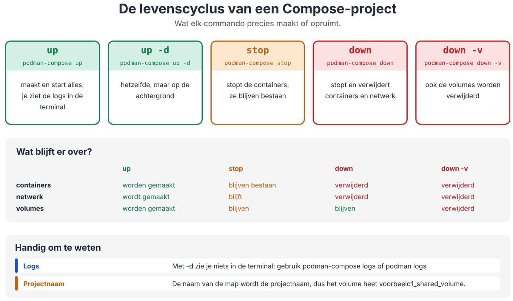
8.5.7 Podman-compose help¶
Met de optie --help krijg je een overzicht van de globale opties en van alle commando's die podman-compose kent.
student@serverXX:~/voorbeeld1$ podman-compose --help
…
up Create and start the entire stack or some of its services
down tear down entire stack
ps show status of containers
start start specific services
stop stop specific services
restart restart specific services
logs show logs from services
exec execute a command in a running container
config displays the compose file
…
De uitvoer is langer dan één scherm. Hieronder zie je enkel het laatste deel: de lijst met commando's. Wil je de volledige uitvoer rustig doorlopen, stuur ze dan door naar less:
student@serverXX:~/voorbeeld1$ podman-compose --help | less
De meeste commando's hebben hun eigen opties. Die vraag je op door --help achter het commando te zetten, bijvoorbeeld:
student@serverXX:~/voorbeeld1$ podman-compose up --help
8.6 Voorbeeld 2: WordPress¶
In het vorige hoofdstuk hebben we WordPress in twee containers geïnstalleerd.
Diezelfde opstelling kan je ook met Podman Compose opbouwen.
8.6.1 .yml-bestand¶
We maken eerst weer een map aan.
student@serverXX:~$ mkdir wordpressmysql
student@serverXX:~$ nano wordpressmysql/compose.yml
services:
mariadb:
image: docker.io/library/mariadb:latest
container_name: mariadb
restart: always
environment:
MARIADB_ROOT_PASSWORD: ServerXXdocker007
MARIADB_DATABASE: wordpress
MARIADB_USER: wp
MARIADB_PASSWORD: ServerXXdocker1
volumes:
- mysql-data:/var/lib/mysql:Z
networks:
- wpnet
wordpress:
image: docker.io/library/wordpress:latest
container_name: wordpress
restart: always
ports:
- "8080:80"
environment:
WORDPRESS_DB_HOST: mariadb:3306
WORDPRESS_DB_USER: wp
WORDPRESS_DB_PASSWORD: ServerXXdocker1
WORDPRESS_DB_NAME: wordpress
volumes:
- wp-content:/var/www/html/wp-content:Z
networks:
- wpnet
volumes:
mysql-data:
wp-content:
networks:
wpnet:
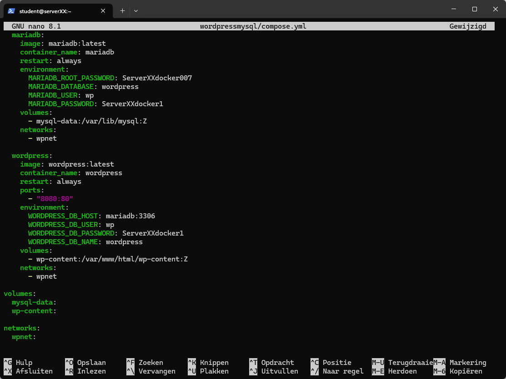
Of met Visual Studio Code.
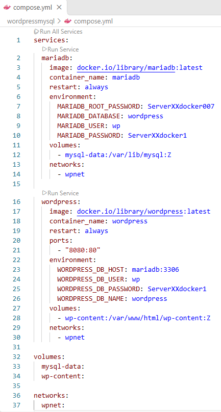
Met wat je ondertussen weet, moet dit YAML-bestand grotendeels duidelijk zijn. Drie dingen zijn het bekijken waard.
-
Een hoofdletter Z bij de volumes. In voorbeeld 1 stond er een kleine z, omdat beide containers hetzelfde volume gebruikten. Hier is dat niet zo: mysql-data hoort enkel bij MariaDB en wp-content enkel bij WordPress. Elk volume wordt dus met een hoofdletter Z aan één container toegewezen.
-
Een korte naam bij image. Er staat mariadb:latest en niet docker.io/library/mariadb:latest. Dat hoeft ook niet: staat het image nog niet op je server, dan gaat Podman zelf op zoek in de registries uit /etc/containers/registries.conf, zoals eerder besproken.
-
Een poortkoppeling bij WordPress. Met "8080:80" komt poort 80 van de container op poort 8080 van serverXX terecht. Je bereikt je website dus via http://serverXX:8080. MariaDB heeft geen poortkoppeling nodig, want enkel WordPress moet die database bereiken — en dat gebeurt binnen het netwerk wpnet.
-
De regel restart: always. Stopt een container om welke reden dan ook, dan start Podman ze meteen opnieuw. Dat is handig voor een website die altijd moet draaien: valt MariaDB weg door een fout, dan komt ze vanzelf terug. Let wel: dit geldt zolang je server draait. Herstart je serverXX, dan komen je rootless containers niet vanzelf mee op. Daarvoor heb je een systemd-service nodig, en dat valt buiten dit hoofdstuk.
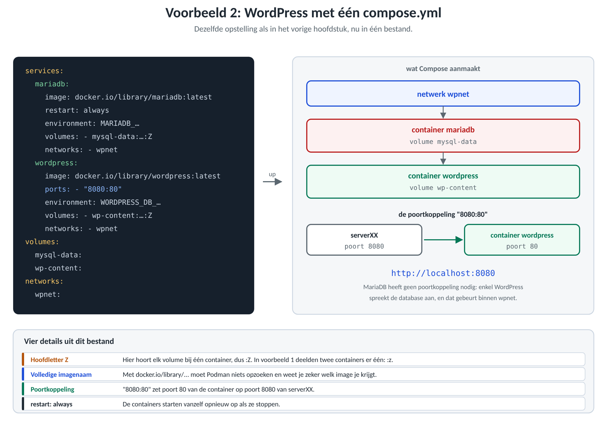
8.6.2 Podman-compose up¶
Ga naar de juiste map, hier wordpressmysql, en voer podman-compose up uit.
student@serverXX:~/wordpressmysql$ podman-compose up
8.6.3 Website instellen¶
Open de browser in je RHEL-VM en vul de gegevens van je website in, net zoals je in het vorige hoofdstuk gedaan hebt.
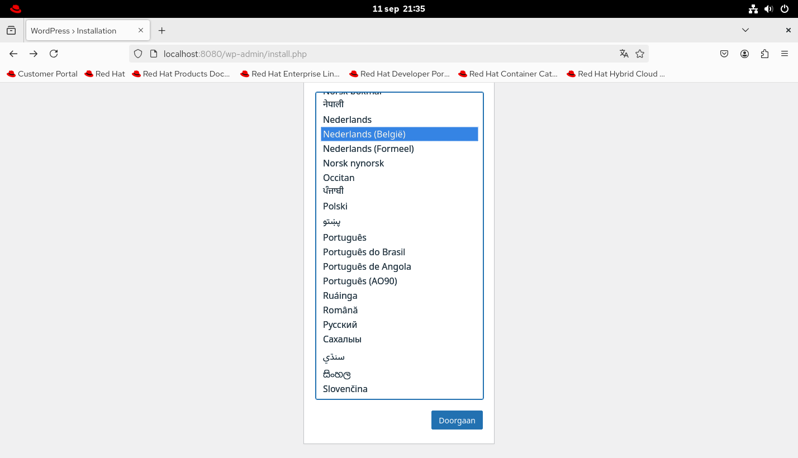
Omdat dit op dezelfde wijze verloopt als in het vorige hoofdstuk, gaan we er hier niet verder op in.